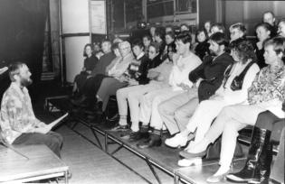

Das Programm entstand 1995 und zählt zu den erfolgreichsten von Holger Uske. Es enthält Texte aus der Zeit zuvor, insbesondere Gedichte aus der -Los-Serie des Autors, aber auch Eindrücke von den kürzlich eingesehenen eigenen Akten wie „Gauck-Behördengang" und einen beklemmenden Text über die Begegnung mit einem vormaligen Spitzel, „das Wiedersehen". Die Programmdauer ist ca. eine Stunde. Uske arbeitet wie immer ohne Technik, nutzt aber zum ersten Mal theatralische Elemente beim Auftritt.

Programmpremiere am 24. November 1995 im Haus Philharmonie in Suhl
Aus der Rezension im „Freien Wort" vom 28.11.1995
Holger Uske erinnert: Die Zeit läuft
Uske hat das feine Gespür, ist ein sensibler Betrachter dieser Welt. Er vermag es, mit seinem musikalisch-literarischen Programm der Hektik der Zeit Einhalt zu gebieten. Er führt seine Zuhörer in die Welt der Gedanken, auf feine, poetisch-sinnliche Art bietet er Nachdenken an. Nachdenken über alles, vor allem aber über den Umgang mit (Lebens-)Zeit. Zeit ist vergänglich … Wie wird der Mensch, die Natur, die Stadt? Wie lebe ich? … Der Literat, Lieder-Sänger und Ditarrist Holger Uske vermochte, die „innere Einkehr" zu bewirken. Sein Abend … hatte die große Zuhörerschaft in jedem Fall verdient. Und Uske die Blumen und den Applaus.
(Ingrid Ehrhardt)
Textauszug
Märchenhafter Aufstieg
Aus dem Brunnen steigen
Willkommen Sonnenlicht
Lange Gesichter ringsum
Der soll an unsere Tafel?
Zwischen Wände abgestellt
Ausgedörrt im Licht
Geworfen wieder und wieder
Noch immer kein Prinz
Aber unerschütterlich
Der Glaube
Nie mehr Frosch zu sein
Aufführungen dieses Programms: in Thüringen, Hessen, Bayern und den Niederlanden